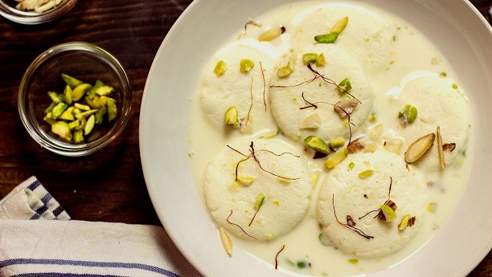
 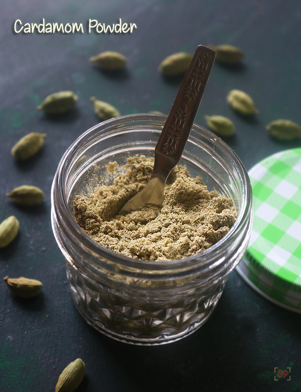
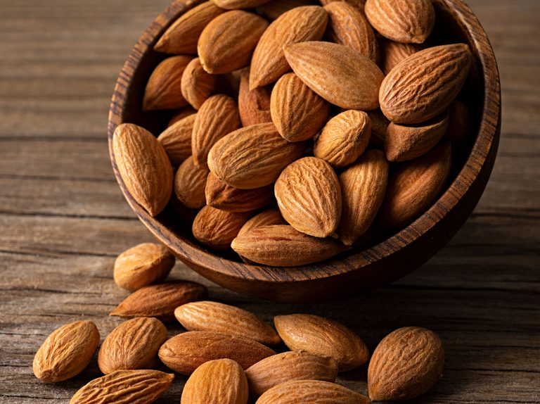
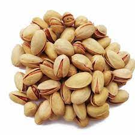
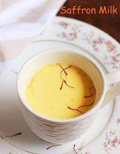
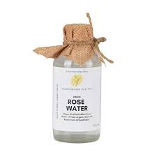
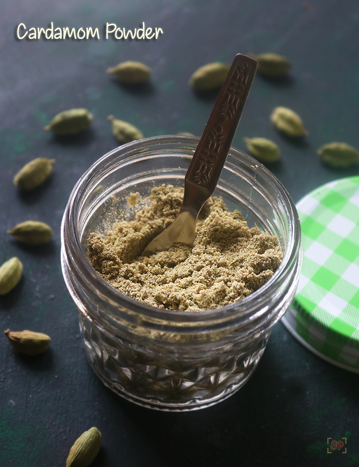
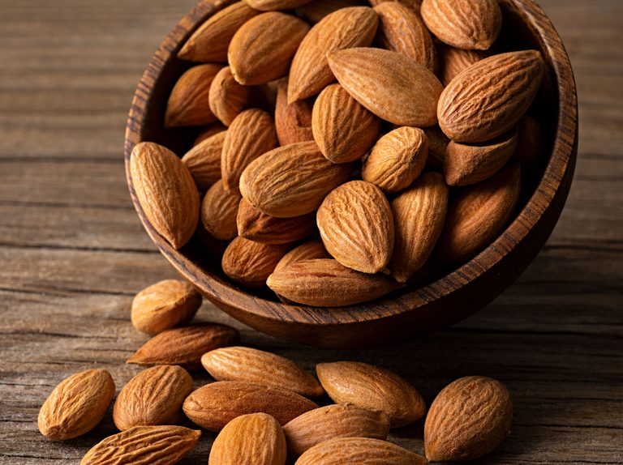
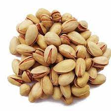
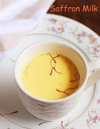
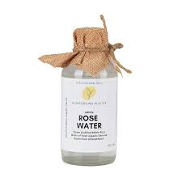
Ingredients
- 1 liter milk
- 1 cup sugar
- 1/4 teaspoon cardamom powder
- 1 tablespoon chopped almonds
- 1 tablespoon chopped pistachios
- 1 tablespoon chopped cashews
- 2 tablespoons saffron milk
- 1 tablespoon rose water
Instructions
- Boil the milk in a heavy-bottomed pan over medium heat.
- Add sugar and cardamom powder to the boiling milk, and stir well until the sugar dissolves.
- Reduce the heat to low and simmer the milk for about 30 minutes, stirring occasionally.
- While the milk is simmering, knead the chenna (paneer) until it becomes smooth and soft.
- Divide the chenna into small equal-sized portions and shape them into flattened balls.
- Drop the chenna balls into the simmering milk and cook for another 10-15 minutes.
- Remove the ras malai from heat and let it cool to room temperature.
- Garnish with chopped almonds, pistachios, cashews, saffron milk, and rose water.
- Refrigerate for a few hours before serving.
for more such recipes,visit: click here for more